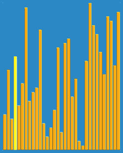

Egyszerű-cserés algoritmus
A buborékos rendezés , amelyet néha süllyedő rendezésnek is neveznek , egy egyszerű rendezési algoritmus , amely elemenként ismételten végiglépi a bemeneti lista elemeit, összehasonlítja az aktuális elemet az utána lévővel, és szükség esetén felcseréli az értékeket. Ezeket a listán való áthaladásokat addig ismételjük, amíg az áthaladás során nem kellett swapokat végrehajtani, ami azt jelenti, hogy a lista teljesen rendezettné vált. Az algoritmus, amely egy összehasonlító rendezés , arról kapta a nevét, ahogyan a nagyobb elemek "buborékolnak" fel a lista elejére. Ez az egyszerű algoritmus gyengén teljesít valós környezetben, és elsősorban oktatási eszközként használják. A népszerű programozási nyelvekbe, például a Pythonba és a Javába beépített rendezési könyvtárak olyan hatékonyabb algoritmusokat használnak, mint a gyorsrendezés , a timsort vagy az egyesített rendezés . Ha azonban a párhuzamos feldolgozás megengedett, a buborékos rendezés O(n) idő alatt rendeződik, ami lényegesen gyorsabb, mint a beillesztési rendezés vagy kiválasztásos rendezés párhuzamos megvalósításai, amelyek nem párhuzamosak olyan hatékonyan.
Előzményei
A buborékos rendezési algoritmus legkorábbi leírása Edward Harry Friend matematikus és aktuárius 1956 - os cikkében [4] Sorting on electronic computer systems a Journal of the Association for Computing harmadik kötetében jelent meg. Machinery (ACM) , mint "rendezési cserealgoritmus". Friend leírta az algoritmus alapjait, és bár dolgozatát kezdetben nem vették észre, néhány évvel később sok informatikus újra felfedezte, köztük Kenneth E. Iverson , aki megalkotta a jelenlegi nevét.
Teljesítmény
A buborékos rendezés a legrosszabb eset és átlagos összetettségű O(n2) ahol "n" a rendezett tételek száma. A legtöbb gyakorlati rendezési algoritmus lényegesen jobb a legrosszabb eset vagy az átlagos bonyolultságú, gyakran O(n log n).Még más is O(n2) a rendezési algoritmusok, mint például a beszúrásos rendezés , általában gyorsabban futnak, mint a buborékos rendezés, és nem bonyolultabbak. Emiatt a gyakorlatban ritkán alkalmazzák a buborékos rendezést. A beillesztési rendezéshez hasonlóan a buborékos rendezés is adaptív , így előnyt biztosít az olyan algoritmusokkal szemben, mint a gyorsrendezés . Ez azt jelenti, hogy felülmúlhatja azokat az algoritmusokat, amikor a lista már túlnyomórészt rendezve van (kevés inverzióval ) , annak ellenére, hogy rosszabb az átlagos eset időbeli összetettsége. Például a buborékos rendezés az O(n) egy már rendezett listán, míg a quicksort továbbra is teljesítené a teljes listáját O(n log n) válogatási folyamat. Bár bármilyen rendezési algoritmus elkészíthető O(n) Előre rendezett listákon egyszerűen a lista ellenőrzésével az algoritmus futása előtt, a szinte rendezett listák jobb teljesítményét nehezebb reprodukálni.
Szemléltetés
Vegyünk egy „5 1 4 2 8” számtömböt, és rendezzük a tömböt a legalacsonyabbtól a legnagyobbig a buborékos rendezés segítségével. Minden lépésben a félkövérrel szedett elemeket hasonlítja össze. Három igazolványra lesz szükség;
Első Pass
( 5 1 4 2 8 ) → ( 1 5 4 2 8 ), Itt az algoritmus összehasonlítja az első két elemet, és felcseréli az 5 > 1 elemet.
( 1 5 4 2 8 ) → ( 1 4 5 2 8 ), Csere 5 óta > 4
( 1 4 5 2 8 ) → ( 1 4 2 5 8 ), Csere 5 óta > 2
( 1 4 2 5 8 ) → ( 1 4 2 5 8 ), Mivel ezek az elemek már rendben vannak (8 > 5), az algoritmus nem cseréli fel őket.
Második Pass
( 1 4 2 5 8 ) → ( 1 4 2 5 8 )
( 1 4 2 5 8 ) → ( 1 2 4 5 8 ), Csere 4 óta > 2
( 1 2 4 5 8 ) → ( 1 2 4 5 8 )
( 1 2 4 5 8 ) → ( 1 2 4 5 8 )
Most a tömb már rendezve van, de az algoritmus nem tudja, hogy elkészült-e. Az algoritmusnak szüksége van egy további teljes lépésre csere nélkül, hogy tudja, hogy rendezve van.
Harmadik Pass
( 1 2 4 5 8 ) → ( 1 2 4 5 8 )
( 1 2 4 5 8 ) → ( 1 2 4 5 8 )
( 1 2 4 5 8 ) → ( 1 2 4 5 8 )
( 1 2 4 5 8 ) → ( 1 2 4 5 8 )

Kertitörpe-Rendezési Algoritmus
A kertitörpe-rendezés (angolul gnome sort) egy tömb elemeinek sorba rendezésére szolgáló algoritmus. Az algoritmust először Dr. Hamid Sarbazi-Azad, a Sharif University of Technology Számítástechnikai tanszékének professzora publikálta 2000-ben, és ő nevezte el „buta rendezés”-nek;[1] ám ezt később Dick Grune keresztelte el „kertitörpe-rendezésnek”, mivel az algoritmus menete őt arra emlékeztette, ahogy egy kerti törpe rendezné a virágcserepek egy sorát.[2] Hasonlít a beszúrásos rendezésre, azonban az elemek a buborékrendezésre emlékeztető módon, sorozatos cserék után kerülnek a helyükre. Elve egyszerű, nem használ beágyazott ciklusokat. Várható végrehajtási ideje O(n²), de O(n)-hez közelít, ha az elemek már közel sorrendben vannak, azaz a sorozat „majdnem” rendezett.[3] Az algoritmus megkeresi az első olyan helyet, ahol két egymást követő elem rossz sorrendben van, és megcseréli őket. Ha egy ilyen csere után rossz sorrend keletkezik, az csak közvetlenül a legutolsó csere előtt lehet, így ezt is ellenőrizzük. Csere után ismét ellenőrzés következik, ezért a cserék addig folytatódnak, amíg az elem a megfelelő helyre nem kerül.
